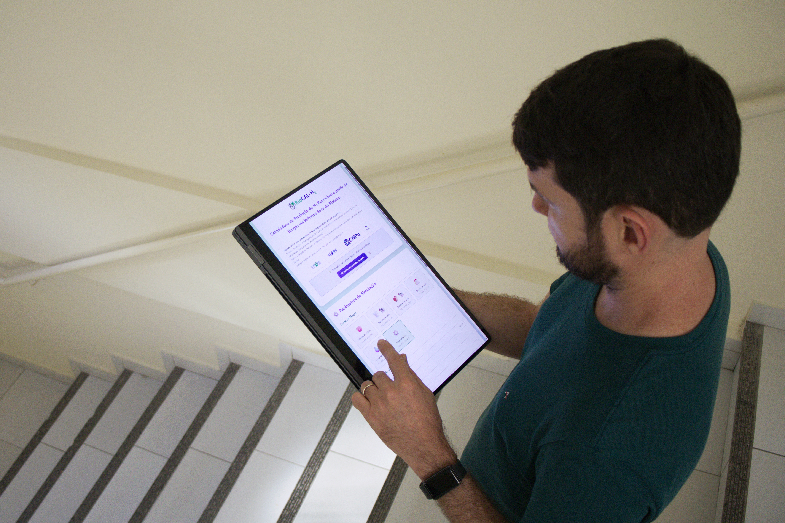
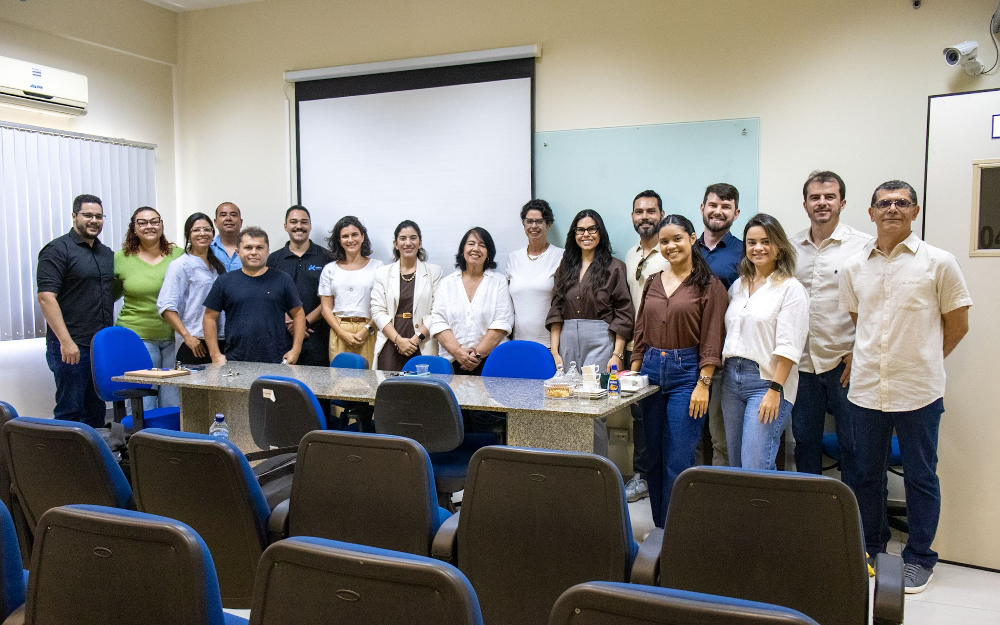
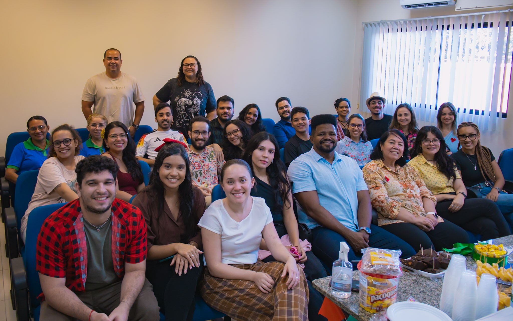

Pesquisa, inovação e sustentabilidade em linguagem clara.
Um espaço para organizar o que o LabTam produz, divulga e compartilha com imprensa, parceiros e comunidade acadêmica.
Comunicação LabTam
Um hub editorial para reunir matérias, redes sociais, vídeos, imprensa e presença institucional do LabTam. Aqui a pesquisa deixa o laboratório e encontra a sociedade.
Um espaço para organizar o que o LabTam produz, divulga e compartilha com imprensa, parceiros e comunidade acadêmica.
Conteúdo editorial
Uma seleção com pesquisas, resultados, prêmios e reportagens que ajudam a contar o impacto público do laboratório.

Ferramenta estima a produção de hidrogênio renovável a partir de biogás e aproxima pesquisa, energia limpa e tomada de decisão.
Ler matéria →Pesquisa aplicada transforma resíduos industriais em combustível sustentável.
Tratamento ambientalEstudo combina processos para enfrentar um desafio importante da indústria petrolífera.
Portal UFRNReportagem institucional amplia a circulação da pesquisa do LabTam.
Portal UFRNMateriais avançados, energia solar e novas frentes de pesquisa.
Áreas de destaque
Como em uma editoria científica, os assuntos ficam organizados para facilitar novas publicações e futuras pautas.
Hidrogênio, biogás, combustíveis renováveis e rotas de baixo carbono.
Aproveitamento de resíduos, pirólise, bio-óleo e economia circular.
Catálise, perovskitas, cerâmicas, adsorventes e materiais funcionais.
Tratamento de efluentes, águas residuais e tecnologias ambientais.
Equipe, iniciação científica, pós-graduação, eventos e oficinas.
Impacto em linguagem pública
Esta página foi pensada para crescer junto com a rotina do laboratório: novas matérias, cards de redes, chamadas de imprensa, fotos, vídeos e links externos podem entrar sem pesar o menu do site.
Onde estamos
Cada canal cumpre um papel: bastidor, memória, reportagem, vídeo, reputação institucional e conexão com parceiros.
Registros rápidos, bastidores, equipe, eventos e divulgação científica no dia a dia.
LinkedInPesquisa, parcerias, conquistas, editais e conexões institucionais.
YouTubeVídeos, apresentações, oficinas, transmissões e conteúdos audiovisuais.
Portal UFRNConteúdos institucionais que ampliam a visibilidade das pesquisas do laboratório.
Fotos e vídeos
Registros da equipe, eventos, reuniões e ações institucionais dão rosto à pesquisa e ajudam a construir memória para o LabTam.
Ver mídias integradas


Imprensa e circulação
Um espaço preparado para reunir matérias do site, links do Portal UFRN, portfólio jornalístico e futuras publicações externas sobre o LabTam.
Textos próprios sobre pesquisas, resultados, eventos e conquistas do laboratório.
Acessar seleção →Reportagens e saberes publicados nos canais oficiais da Universidade.
Ver exemplo →Área pronta para receber links do portfólio, entrevistas, releases e aparições em veículos externos.
Enviar pauta →Central viva
O hub está organizado para receber novas matérias, cards de redes, fotos, vídeos, reportagens e materiais de imprensa mantendo a identidade visual do LabTam.